第二章 Shell 与命令行
为什么还需要命令行？
如果你刚在第一章装好了 Debian 或者 Ubuntu，第一次开机看到的很可能是漂亮的桌面：壁纸、开始菜单、浏览器图标、文件管理器。你完全可以用鼠标双击打开文件夹，拖拽文件，右键新建文档。既然如此，为什么还要学习一个黑底白字、看起来有点吓人的命令行？
这个问题几乎每一个初学者都会问。答案是：图形界面（GUI）确实好用，但命令行（CLI）在另外一些场景下几乎不可替代。理解了这一点，你学命令行时就不会觉得是在背枯燥的指令，而是在获得一种更精确的表达工具。
批量任务：一行命令胜过一百次点击
假设你正在做一个机器学习实验，训练脚本每次跑完都会在当前目录留下一个日志文件，文件名形如 result_001.log、result_002.log……一百次实验下来，你有了整整一百个文件。导师让你把每个日志里出现的 Final Accuracy 那一行都挑出来，汇总到一个表格里。
用图形界面怎么做？你大概会一个一个双击打开，找到那一行，复制，粘贴到 Excel 或文本文件里。一百个文件，就意味着一百次打开、一百次查找、一百次复制粘贴。即使你很熟练，这也得花上半个小时，而且中间极可能看错行、贴错位置。
用命令行，只需要一句话：
student@debian:~/experiments$ grep "Final Accuracy" result_*.log > accuracy_summary.txt这句话的意思不难猜：grep 负责“按关键词查找”，"Final Accuracy" 是关键词，result_*.log 表示“所有以 result_ 开头、以 .log 结尾的文件”，> 把结果写进 accuracy_summary.txt。一秒钟之后，汇总文件就已经生成了。
更重要的是，这条命令可以被保存、被复用、被修改。一个月后你跑了新的一批实验，文件名变成了 v2_001.log，你只需要把命令里的模式改成 v2_*.log 再执行一次即可。图形界面里的鼠标操作却很难“保存下来下次再点”。
科研工作中类似的批量任务比比皆是：材料模拟生成的大量结构文件、晶体学数据集中的衍射图谱、高通量实验产出的 CSV 表格。命令行的价值不在于它“更快”，而在于它把重复动作变成了一段可记录、可复现、可自动化的表达。
当然，这并不是说图形界面一无是处。探索一个陌生的文件夹、预览图片、第一次接触某个软件时，鼠标和图标往往更直观。命令行与图形界面不是敌人，而是不同场景下的工具。GUI 适合探索，CLI 适合批量与复现。本书的重点放在 CLI，正是因为后面我们要处理的计算任务，大多属于批量与复现的范畴。
如果你想了解 Linux 图形界面的完整面貌——它的底层架构、常见桌面环境、发行版选择以及远程图形界面的用法，可以参考延伸阅读Linux 的图形界面：不只是命令行的反面。
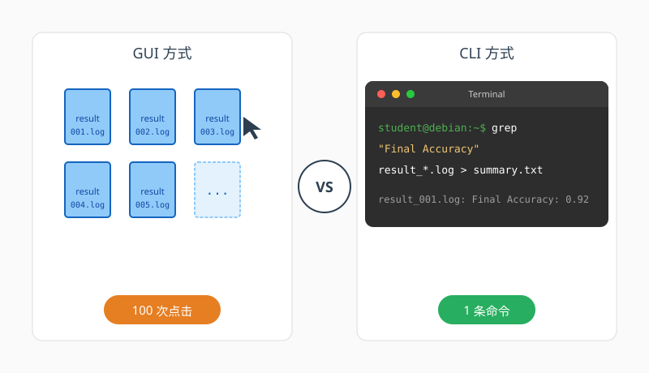
远程服务器：没有图形界面的主战场
你平时用的笔记本电脑可能有一块不错的屏幕，但真正的 AI 训练、材料模拟、大规模计算往往发生在远程服务器上。这些服务器可能安装在学校的机房、实验室的机柜，或者云服务商的数据中心里。它们通常没有显示器，没有键盘鼠标，甚至没有安装桌面环境——因为桌面会占用 CPU、内存和显卡资源，而这些资源最好全部留给计算任务。
要操作这样的机器，最常见的办法就是通过 SSH 远程登录。登录成功后，你看到的就是一个纯命令行界面：
student@debian:~$ ssh student@gpu-lab01
Welcome to Ubuntu 22.04.5 LTS (GNU/Linux 5.15.0 x86_64)
Last login: Wed Jul 8 09:42:17 2026 from 10.0.0.15
student@gpu-lab01:~$注意提示符的变化：登录前是 student@debian，登录后变成了 student@gpu-lab01。主机名的改变告诉你，现在你已经不在自己的电脑上了，而是在实验室的 GPU 服务器 gpu-lab01 上。
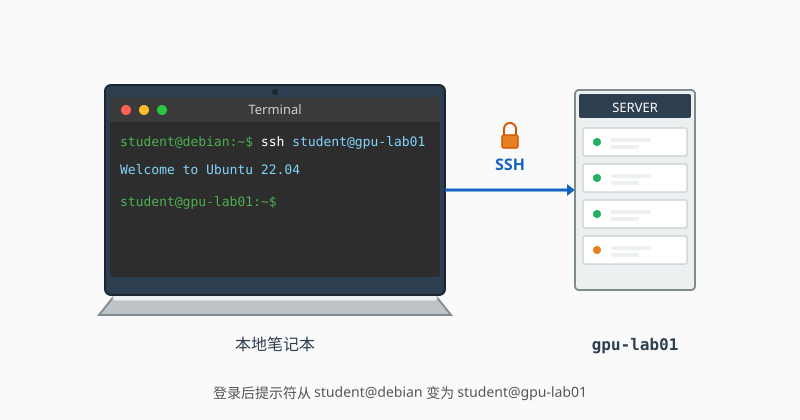
在远程服务器上，图形界面通常既不可用也不划算。即使通过远程桌面勉强连上去，网络延迟也会让每一次点击都变得迟钝；而命令行只传输纯文本，哪怕你的网速不太稳定，也能保持流畅。对于要经常登录服务器查看训练进度、启动任务、下载结果的科研工作者来说，命令行是几乎唯一高效的交互方式。
这个场景也解释了为什么本书从第二章就开始讲命令行。第一章让你认识了 Linux，第二章则带你进入实际使用 Linux 最常见的入口：一个终端窗口，或一次 SSH 会话。
精确描述：命令是人跟计算机的对话
很多人初次接触命令行时最大的恐惧是：“这么多命令，我记不住怎么办？”其实，命令行不是考记忆力，而是考你能否把意图表达清楚。换句话说，命令是你跟计算机之间的对话，语法就是这门对话的规矩。
想象一下你给实验助手写一张便签：
请把
~/data目录下所有.csv文件复制到backup/目录。
这张便签里有三个要素：动作（复制）、对象（~/data 下所有 .csv 文件）、目标（backup/ 目录）。命令行只是把同样的意思翻译成更紧凑的形式：
student@debian:~$ cp ~/data/*.csv backup/这里 cp 是“复制”这个动作，~/data/*.csv 是“从哪里复制哪些文件”，backup/ 是“复制到哪里去”。~ 代表你的家目录，* 是通配符，表示“任意文件名”。你不一定现在就把每个符号都搞懂，但你可以先感受到：命令的结构和那张便签几乎是一一对应的。
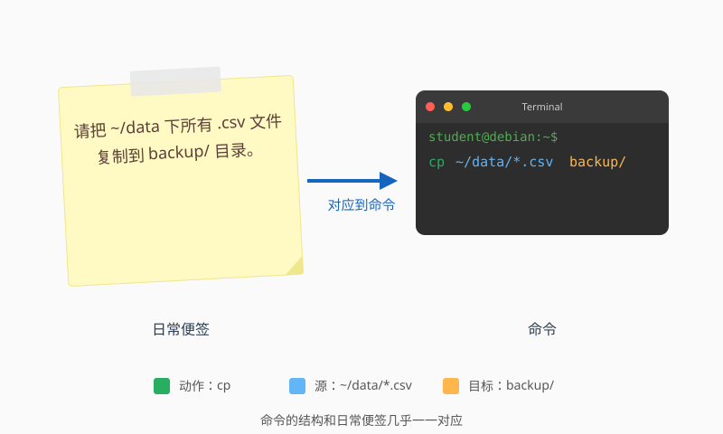
说错了也没关系。命令行最大的好处之一是“可撤销的试探”。如果目标目录不存在，计算机会直接告诉你：
student@debian:~$ cp ~/data/*.csv bakup/
cp: target 'bakup/' is not a directory看到这个报错，你就知道刚才把 backup 拼成了 bakup，改回来再执行一次即可。命令行不怕犯错，怕的是不观察报错、不理解意图就盲目敲命令。
初学者常犯的错误是把命令当成咒语去背。更好的方式是：先想清楚“我想让计算机做什么”，然后再去查“这个意图用哪条命令表达”。随着你写得越来越多，常用命令会自然变成肌肉记忆，而不常用的命令，知道去哪里查比死记硬背更重要。
下一节，我们会把目光投向命令行背后的三个角色：终端、Shell 和 Bash。你将看到，你输入的命令并不是直接交给操作系统执行的，中间还有一层“翻译”。
Shell、终端、Bash 与配置文件
上一节我们说，命令行是你跟计算机对话的方式。但这句话其实省略了不少环节。你坐在屏幕前，对着一个黑底白字的窗口敲下 ls，然后看到文件列表跳出来——这中间到底发生了什么事？是谁“听见”了你敲的命令，又是谁真正去执行它？
这一节就来拆掉这面墙，介绍三个最容易混淆的角色：终端、Shell 和 Bash。理解了它们的关系，你再看到提示符、配置文件和别名时，就不会觉得是一堆零散的规矩，而是同一张工作流程图上的不同零件。
终端是窗户，Shell 是翻译
想象你站在一家餐厅窗外。你能看见厨师在灶台前忙碌，但你们中间隔着玻璃，不能直接对话。于是你叫来一位站在窗边、精通两边语言的服务员：你把想点的菜告诉他，他翻译给厨师；厨师把菜做好，他再端出来给你。
在这个比喻里：
- 终端（Terminal）就是那块玻璃窗——它负责显示文字、接收你的键盘输入，本身并不懂命令。
- Shell 就是那位服务员——它把你输入的命令解释成操作系统能理解的格式，再交给内核去执行。
- 内核（Kernel）就是后厨的厨师——真正干活的人：读写磁盘、调度进程、管理内存。
当你打开“终端”应用，输入 ls 并按下回车时，流程是这样的：
- 终端捕获你的按键，把
ls传给 Shell； - Shell 一看：哦，这是“列出目录内容”的意思；
- Shell 去 PATH 里找到对应的程序，调用内核执行；
- 内核把结果返回给 Shell；
- Shell 再通过终端把结果一行行显示给你。
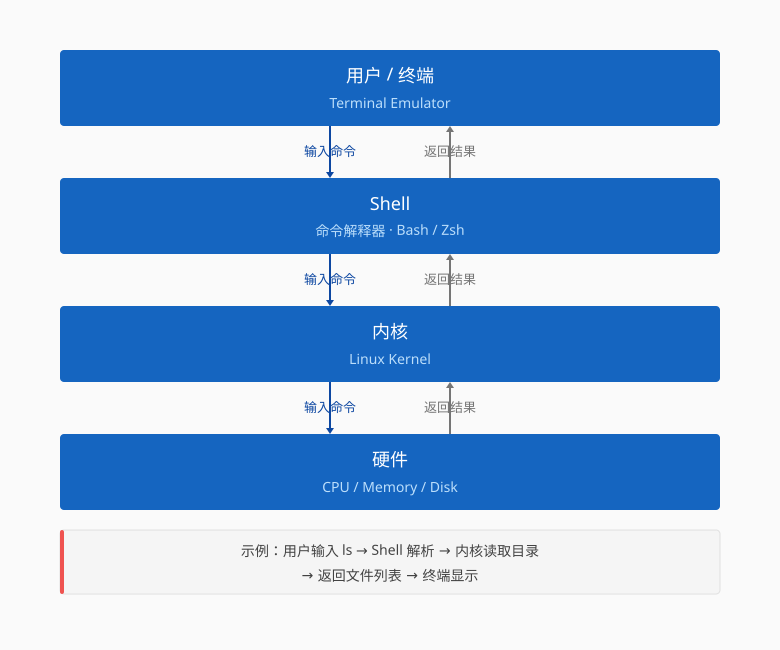
终端有很多种类。你本地 Debian 桌面上的“终端”应用是一个，通过 SSH 远程登录后看到的那个文字界面也是一个。它们外观不同，但干的活一样：替你接收输入、显示输出。真正理解你命令的，是它们背后的 Shell。
试着在你的终端里敲：
student@debian:~$ ls如果一切正常，你会看到当前目录下的文件列表。请记住：不是终端认识 ls，而是终端背后的 Shell 认识它。
内核：操作系统的心脏和交警
前面我们把内核比作了餐厅的后厨厨师，这个比喻能帮你记住“真正干活的是内核”，但内核的角色其实比一个厨师更复杂。它更像是整个城市的基础设施：发电厂、自来水厂、交通信号灯、道路网络，全都归它管。没有它，应用程序就像停在空地上的汽车，有油也跑不起来。
内核是什么？ 内核（Kernel）是操作系统最核心、最底层的一层软件。它直接运行在硬件之上，负责把 CPU、内存、硬盘、网卡这些硬件资源管理起来，并给上层程序提供统一的访问接口。你看到的桌面、浏览器、Shell、Python 脚本，甚至本书后面要讲的 Docker 和数据库，最终都得通过内核才能真正使用硬件。
内核的主要职责可以分成五大块：
- 进程管理： 决定现在让哪个程序使用 CPU。你在终端里同时运行训练脚本、听歌、后台下载文件，内核会快速在它们之间切换，让每个程序都觉得自己“独占”了 CPU。
- 内存管理： 给每个程序分配和回收内存，防止它们互相踩踏。如果物理内存不够用，内核还会把暂时不用的数据换到硬盘上的交换空间（swap），让系统不至于立刻崩溃。
- 文件系统： 帮你把硬盘上的 0 和 1 组织成文件和目录，并提供打开、读取、写入、删除等统一接口。不管你是存在机械硬盘、SSD 还是网络存储，内核都尽量让上层程序用同一套方式访问。
- 设备驱动： 让操作系统认识各种硬件：键盘、鼠标、显卡、网卡、打印机……每个硬件都有自己独特的“脾气”，驱动程序就是内核和硬件之间的翻译官。Linux 内核内置了大量驱动，所以插上常见硬件通常能直接工作。
- 网络栈： 处理数据包的发送和接收，把应用程序要传的数据打包成网络协议能识别的格式，再交给网卡发出去。你通过 SSH 登录服务器、浏览器访问网页，底层都依赖内核的网络栈。
如果把计算机比作一家大公司，内核就是总经理办公室加后勤中心：它不但决定资源怎么分配，还亲自处理所有和“外面世界”（硬件、网络）打交道的事务。
用户态与内核态
为了安全和稳定，Linux 把程序运行分成两种状态。普通程序（比如你的 Python 脚本、浏览器、Shell 本身）运行在用户态，只能访问自己的内存和有限的资源；内核运行在内核态，拥有访问全部硬件和系统数据的权限。两者之间的边界就像银行柜台：客户（用户态）不能自己进金库拿钱，只能填单请求，柜员（内核）核实后再帮你操作。
这种区分有两个好处。第一，一个程序崩溃通常只会影响它自己，不会把整个系统带崩。第二，用户程序不能随便读写其他程序的内存或修改关键系统配置，从而降低了恶意软件和误操作的风险。
系统调用：用户程序请内核帮忙的“申请单”
用户态程序需要内核帮忙时，会提交一张“申请单”，这张单子就叫系统调用（system call）。比如你想打开一个文件，Shell 会代表你发起一个 open 系统调用；你想创建一个新进程运行另一个程序，内核会收到 fork/exec 系统调用；你想通过网络发送数据，内核会处理 send 相关的调用。
在命令行里，你输入的每条命令几乎都会触发一系列系统调用。以 ls 为例：Shell 找到 /bin/ls 后，请求内核把它加载成进程；内核分配内存、读取磁盘上的程序文件、安排 CPU 运行；ls 运行后又要通过系统调用打开目录、读取文件信息，再把结果返回给 Shell。整个过程快得你几乎察觉不到，但内核一直在背后忙碌。
为什么初学者需要知道这些？
了解内核不是为了让你去读几百万行 C 代码，而是为了在遇到下面这些情况时，知道问题大概出在哪一层：
- 命令到底在哪里执行？ 你敲的命令是 Shell 翻译的，但真正调度 CPU、读写磁盘、收发网络数据的是内核。
- 权限从哪里来？ 普通用户和 root 用户的区别，本质上是内核在检查你的身份后，决定允不允许你发起某些系统调用。所以提示符里的
$和#，背后是内核在把关。 - 为什么有些操作需要 root？ 修改系统配置、安装全局软件、监听 1024 以下的网络端口、直接访问某些硬件设备，这些都会触及内核的资源分配和安全边界，因此需要更高的权限。
先建立这个意识就够了：命令行不是直接操作硬件，而是通过 Shell 向内核发请求。随着后面学习权限、网络、Docker 和数据库，你会越来越深刻地体会到内核在这张图景中的中心位置。
Bash 只是众多 Shell 中的一种
Shell 不是某一个具体软件的名字，而是一类程序的统称。就像“浏览器”可以指 Chrome、Firefox、Safari 一样，Shell 也有很多种：sh、bash、zsh、fish……它们的大致职责相同，但语法细节、提示符样式和扩展功能各有差异。
在大多数 Linux 发行版里，默认的 Shell 是 Bash（Bourne Again SHell）。本书的所有示例也都默认在 Bash 下运行。你不需要立刻去切换它，但最好知道自己正在用哪一种。
在终端里执行下面这条命令，就能看到当前用户的默认 Shell：
student@debian:~$ echo $SHELL
/bin/bash$SHELL 显示的是你登录系统时的默认 Shell；如果输出是 /bin/bash，说明你的默认 Shell 是 Bash。当前终端实际运行的 Shell 可能与之相同，也可能不同（如果你手动切换过）。有些同学的系统可能装的是 zsh，输出就会是 /bin/zsh。它们的日常操作差别不大，但在写复杂脚本或配置别名时，细节会有所不同。
对于初学者来说，认准 Bash 就够了。等你能熟练地用它完成日常任务，再考虑尝试 zsh 或 fish 也不迟。
看懂提示符：它其实在向你汇报
每次 Shell 准备好接受新命令时，它都会先打出一行提示符。Bash 的默认提示符看起来大概是这个样子：
student@debian:~/project$它不是在随便装饰，而是在向你汇报四件事：
student：当前用户名。如果你在多人共用的服务器上，这能帮你确认“我是谁”。debian：主机名。登录远程服务器后，这里会变成gpu-lab01之类的名字，提醒你“我在哪台机器上”。~/project：当前目录。~是你的家目录，所以这里表示“我正在家目录下的 project 文件夹里”。$：身份提示。$表示当前是普通用户；如果是#，则表示你是 root（超级用户），拥有对整个系统的最高权限。
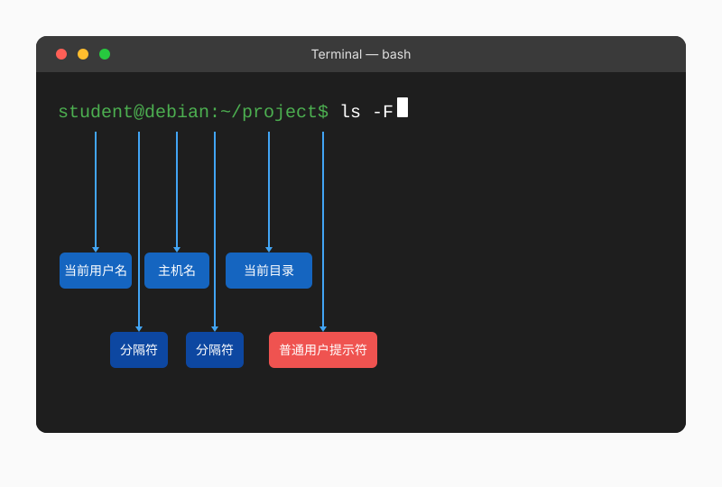
$ 和 # 的区别非常关键。普通用户误删一个文件，最多影响自己的数据；root 用户可以删掉系统文件、修改任何配置。很多初学者在网上搜到的命令前面带有 #，那通常表示“这条命令需要在 root 权限下执行”，而不是让你把 # 也敲进去。如果你不确定自己的身份，先瞄一眼提示符末尾。
提示符里的当前目录尤其值得留意。在命令行里，很多命令都是“就地执行”的，你所在的位置决定了 rm *.txt 会删哪里的文件。养成先看提示符、再敲命令的习惯，能避免很多“手滑”事故。
输入命令后发生了什么
现在我们把“终端—Shell—内核”这条链路再展开一点。你敲下 which python3 并回车，这短短一秒钟内，Shell 其实做了不少事：
- 读取你输入的整行文字；
- 把它拆成命令名、选项和参数；
- 在 PATH 环境变量列出的目录里，寻找对应的可执行程序；
- 找到后调用内核运行该程序；
- 程序把结果写到标准输出；
- Shell 把输出拿回终端，显示给你；
- 最后重新打印提示符，等待下一条命令。
PATH 可以理解为 Shell 的“常用程序搜索路径”。当你输入一个不带路径的命令时，Shell 会依次去这些目录里找。你可以用 which 命令查看某个命令实际对应的是哪个文件：
student@debian:~$ which python3
/usr/bin/python3
student@debian:~$ which ls
/bin/lswhich python3 告诉你，当你输入 python3 时，Shell 实际调用的是 /usr/bin/python3。这就好比你跟服务员说“来份宫保鸡丁”，服务员在菜单里找到对应编号，再告诉后厨。
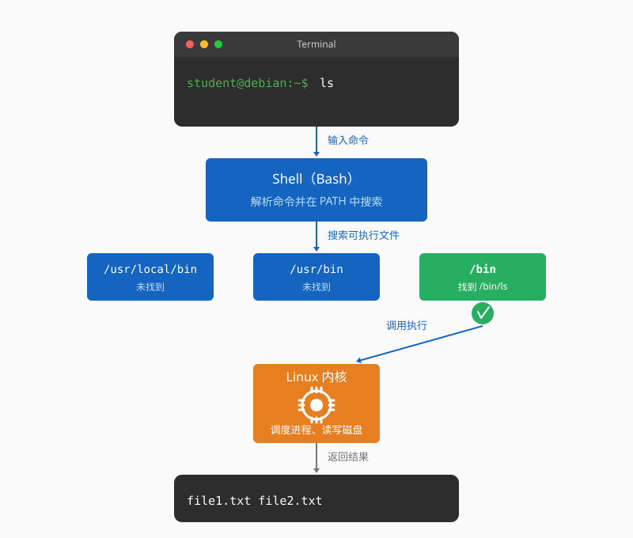
这个流程本身不需要背下来，但你要知道：命令不是魔法。它不过是一连串明确的步骤，而 Shell 就是负责把这些步骤串起来的调度员。
Bash 配置文件：.bashrc、.bash_profile、.profile
每次 Bash 启动时，它都会去读取几个隐藏文件，把里面的设置加载进来。这些配置文件通常位于你的家目录下，文件名以点开头，所以 ls 默认看不到它们。最常被提到的有三个：
.bashrc：每次打开新的交互式 Shell（比如新开一个终端窗口）时读取。适合放别名、函数和每次都要生效的个性化设置。.bash_profile：登录时读取，比如通过 SSH 第一次登录服务器。适合放只在登录时需要设置一次的环境变量。.profile：通用登录配置文件。如果系统没有.bash_profile，Bash 可能会退而读取它。
三者的加载时机可以用一句话概括：登录时先读 .bash_profile（或 .profile），打开新终端时再读 .bashrc。作为初学者，你暂时不需要深究“登录 Shell”和“非登录 Shell”的精确区别，只要知道它们分工不同即可。
那么，什么时候该改哪个文件？
- 想给命令起别名，比如让
ll等效于ls -la→ 写入.bashrc。 - 想修改 PATH，让系统优先使用你自己安装的软件 → 通常写入
.bash_profile或.profile。 - 只想在当前窗口临时试试 → 直接敲命令，不用改任何文件。
修改配置文件后，不会立即生效，因为 Bash 只在启动时读一次。想让新设置马上生效，可以用 source 命令重新加载：
student@debian:~$ source ~/.bashrc这相当于告诉 Bash：“请你重新读一遍家目录下的 .bashrc，把新加的内容加载进来。”
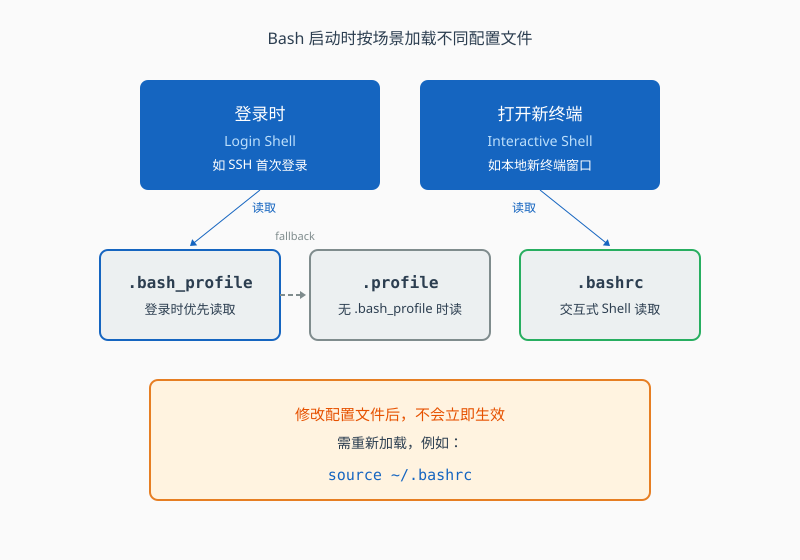
刚开始时，建议不要随意改动这些文件，尤其是从网上复制粘贴配置之前，先搞清楚每一行在做什么。一旦改错，最直接的后果就是新打开的终端报一堆错，或者命令行为变得奇怪。改动前备份一份，总是个好主意。
别名：alias
有些命令你每天都会敲很多遍，每次都打全称就很烦。Bash 允许你给长命令起个短名字，这个短名字就叫“别名”（alias）。
比如，ls -la 可以列出当前目录下所有文件（包括隐藏文件）的详细信息。如果你觉得每次都要敲五个字符太麻烦，可以定义一个别名：
student@debian:~$ alias ll='ls -la'定义之后，再输入 ll 就等效于 ls -la：
student@debian:~$ ll
drwxr-xr-x 5 student student 4096 Jul 8 10:20 .
drwxr-xr-x 3 student student 4096 Jul 8 09:15 ..
-rw-r--r-- 1 student student 220 Jul 8 09:10 .bash_logout
-rw-r--r-- 1 student student 3771 Jul 8 09:10 .bashrc
-rw-r--r-- 1 student student 807 Jul 8 09:10 .profile另一个常用别名是给 rm 加上 -i 选项，让它在删除前询问确认：
student@debian:~$ alias rm='rm -i'
student@debian:~$ rm notes.txt
rm: remove regular file 'notes.txt'?注意，直接在终端里用 alias 命令定义的别名，只对当前 Shell 有效。关掉终端再打开，它就消失了。如果你想让别名永久生效，需要把它写进 .bashrc 文件：
student@debian:~$ echo "alias ll='ls -la'" >> ~/.bashrc
student@debian:~$ source ~/.bashrc不过，别名虽然方便，也不要滥用。它是你的个人快捷方式，不是命令本身。考试、写脚本或跟别人交流时，最好使用完整命令，以免造成误解。
到这里，你已经认识了命令行背后的三个核心角色：终端负责接话，Shell 负责翻译和调度，Bash 是我们最常用的那一种 Shell。下一节，我们会离开本地桌面，去看看如何通过 SSH 登录到实验室的远程服务器。
远程连接：SSH 与密钥
上一节我们讲的是本地终端和 Bash 的工作方式。但很多时候，你要操作的 Linux 机器并不在你面前——它可能躺在实验室的机柜里，可能租用在云服务商的数据中心，也可能是学校集群中的某一台计算节点。这些机器通常没有显示器、没有键盘鼠标，甚至根本没有安装桌面环境。怎么访问它们？答案几乎总是 SSH。
为什么需要 SSH
想象你刚拿到一台实验室的 GPU 服务器账号。它性能强劲，足够跑你的训练任务，但你不可能每次都跑到机房去插键盘。服务器也没有必要装桌面：桌面会吃掉内存和显存，而这些资源最好全部留给计算。于是管理员只给你开了一条命令行入口，你通过它登录、运行程序、查看结果。
这种远程登录需要一个协议来承载。早年间有人用 telnet 或 rlogin，它们能把你的键盘输入原样发送到服务器，再把服务器的输出传回来。问题是，它们在网络上走的是明文：你的用户名、密码、敲下的每一条命令，都可能被同一段网络里的其他人读到。在机房内部或许还能勉强接受，一旦跨楼层、跨校园、跨互联网，风险就太大了。
SSH（Secure Shell）正是为了解决这个麻烦而生的。它在你的电脑和服务器之间建立一条加密通道：发送前先加密，收到后再解密，中间人即使截获了数据包，也读不出内容。登录口令、文件内容、命令输出，全都被这条通道保护起来。
最基本的用法很直接：
student@debian:~$ ssh student@gpu-lab01如果网络可达、账号正确，你就会看到远程服务器的欢迎信息，提示符也变成 student@gpu-lab01。从现在起，你敲的每一行命令都在服务器上执行，就像在本地终端里一样自然。
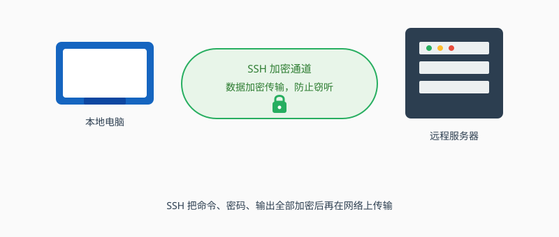
第一次登录：host key 与指纹
第一次连接一台服务器时，SSH 不会立刻让你输入密码。它会先弹出一行让你有点紧张的提示：
student@debian:~$ ssh student@gpu-lab01
The authenticity of host 'gpu-lab01 (10.0.0.21)' can't be established.
ED25519 key fingerprint is SHA256:nTh3xampleF1ngerpr1ntStr1ngh3r3.
Are you sure you want to continue connecting (yes/no/[fingerprint])?这句话的意思是：服务器向你出示了一份身份证明，叫做 host key；为了便于人类辨认，SSH 把它压缩成了一串指纹。你从来没连过这台机器，所以客户端不确定它是不是真的 gpu-lab01，需要你来确认。
为什么要这么麻烦？因为网络里可能存在“中间人攻击”：有人冒充服务器，骗你输入密码。如果你连的是假服务器，它就能记录下你的账号密码，再拿这些凭据去连真正的服务器。SSH 通过 host key 让你第一次就确认“我对面这台机器是不是正确的那个”。指纹对上了，就说明你正在和真实的服务器建立加密通道。
在实验室或公司里，管理员通常会把服务器的指纹贴在 wiki、群公告或邮件里。第一次连接前，把屏幕上显示的指纹和管理员给的对比一下，一致再输入 yes。确认之后，SSH 会把这台服务器的 host key 记录在你本地家目录的 ~/.ssh/known_hosts 文件里。下一次再连，客户端会自动核对，如果指纹变了，它会大声警告你：
WARNING: REMOTE HOST IDENTIFICATION HAS CHANGED!这时不要急着继续。先问问管理员：服务器是不是重装过？IP 是不是被别人用了？只有排除了被冒充的可能，才能更新 known_hosts。养成这个习惯，你的远程登录才算真正安全。
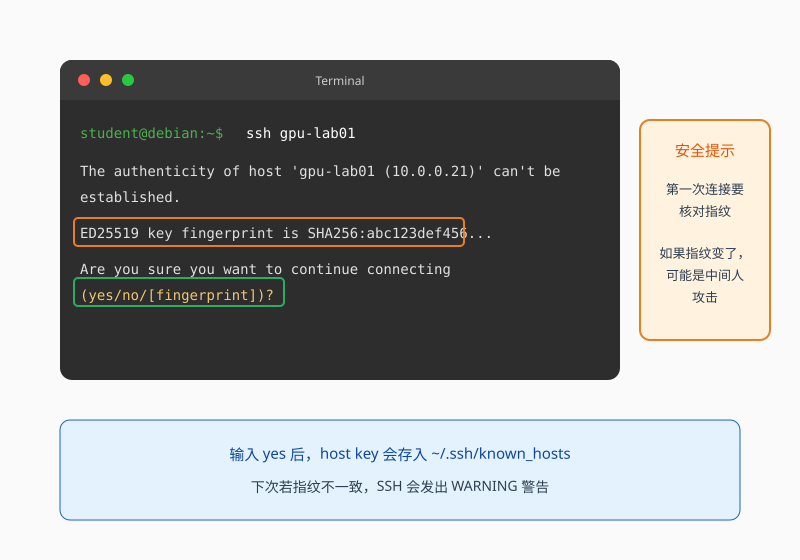
密码认证 vs 密钥认证
SSH 支持好几种验证身份的方式，最常见的是密码认证和密钥认证。
密码认证最简单：每次登录都输入你的系统密码。它适合临时使用、临时机器，或者你还没配置密钥的场合。但缺点也明显：每次都要敲密码，容易输错；如果你写了一个需要自动运行的脚本，让它半夜自动登录服务器下载结果，密码认证就很不方便，因为脚本没法像人一样回答密码提示。
密钥认证则是另一套思路。它不再依赖“你知道什么口令”，而是依赖“你拥有什么文件”。你需要生成一对密钥：一把叫私钥，留在你自己的电脑上，绝不能给别人；另一把叫公钥，可以复制到任何你想登录的服务器上。登录时，服务器用公钥出一道数学题，只有持有对应私钥的客户端才能答出来。答对了，服务器就放行。
生成密钥对只需要一条命令：
student@debian:~$ ssh-keygen -t ed25519 -C "student@example.com"
Generating public/private ed25519 key pair.
Enter file in which to save the key (/home/student/.ssh/id_ed25519):
Enter passphrase (empty for no passphrase):
Your identification has been saved in /home/student/.ssh/id_ed25519
Your public key has been saved in /home/student/.ssh/id_ed25519.pub-t ed25519 指定了密钥类型，ed25519 是目前推荐的安全且体积小巧的算法。系统会问你保存位置，默认 ~/.ssh/id_ed25519 对大多数人来说就够了。它还会问你是否给私钥加一层额外的口令。如果你这台电脑只有你一个人用，可以直接回车跳过；如果电脑是公用的，或者私钥可能会被复制走，加个口令会更安全。
生成之后，你会在 ~/.ssh/ 下看到两个文件：
id_ed25519：私钥。这是你的“身份证原件”，任何人拿到它都能冒充你登录服务器。id_ed25519.pub：公钥。可以公开，可以复制到服务器上。
把公钥复制到服务器上也很方便：
student@debian:~$ ssh-copy-id student@gpu-lab01
Number of key(s) added: 1这条命令会帮你把公钥追加到服务器上的 ~/.ssh/authorized_keys 文件里。下一次再连，SSH 会自动用私钥完成验证，不再需要输入系统密码：
student@debian:~$ ssh student@gpu-lab01
Welcome to Ubuntu 22.04.5 LTS (GNU/Linux 5.15.0 x86_64)
student@gpu-lab01:~$这里有一条铁律：私钥不要上传到 GitHub，不要发到群里，不要借给别人，也不要通过邮件传输。如果你怀疑私钥泄露了，立刻在本地删除它，并在服务器上把对应的公钥从 authorized_keys 里移除，然后重新生成一对。
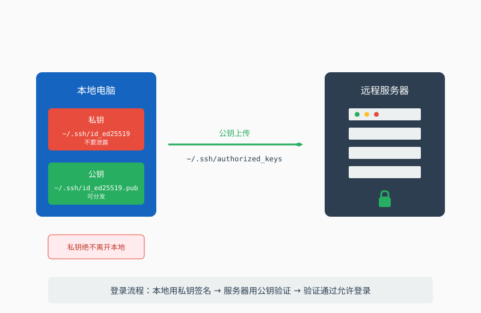
一些常用 SSH 技巧
掌握了基本登录和密钥认证之后，还有一些小技巧能让远程操作更顺手。
第一，服务器不一定都开在默认的 22 端口。出于安全考虑，很多实验室会把 SSH 服务改到别的端口，比如 2222。连接时需要显式指定：
student@debian:~$ ssh -p 2222 student@gpu-lab01第二，如果服务器地址很长、端口也不是默认，每次都打一长串命令很烦。你可以把这些信息写进 ~/.ssh/config 文件，给服务器起个简短别名：
# 文件：~/.ssh/config
Host gpu
Hostname gpu-lab01
User student
Port 2222
IdentityFile ~/.ssh/id_ed25519
ServerAliveInterval 60注意，config 文件本身也包含敏感信息，要保护好它的权限。配置好之后，登录简化为：
student@debian:~$ ssh gpu第三，长时间不操作时，SSH 连接可能会被防火墙或路由器悄悄断开。配置里加上 ServerAliveInterval 60 后，客户端会每隔 60 秒给服务器发一个保持连接的心跳包，避免Idle被踢下线。对于需要挂一整晚跑训练的任务，这个小设置特别实用。
SSH 远远不止登录这么简单，它还能传文件、执行远程命令、做端口转发。本章我们只聚焦最基础的远程登录和密钥配置，后面用到更多功能时，你会更容易理解它们。
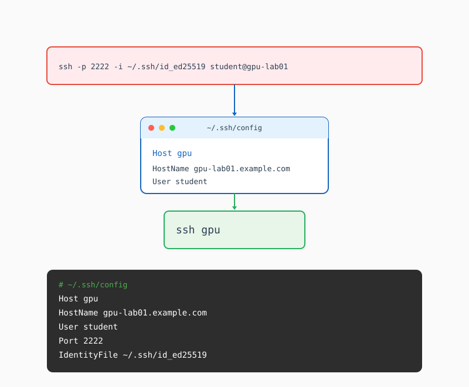
文件系统：从 / 开始的世界
通过 SSH 登录到服务器后，你第一眼看到的提示符里总会有一个目录，比如 ~ 或 ~/project。它们不是随便写在那里装饰，而是在告诉你：你现在站在文件系统的哪个角落。Linux 的文件系统看起来和 Windows 很不一样——没有 C 盘、D 盘，也没有“我的电脑”里那一排盘符。它是一棵从 / 开始的根目录大树，所有文件和目录都挂在这棵树上。理解这棵树的基本结构，是你在命令行里不迷路的第一步。
没有 C 盘，一切从 / 开始
如果你习惯了 Windows，打开“此电脑”时首先看到的是 C:、D:、E: 这样的盘符。每个盘有自己的根，互相之间像是并列的抽屉。Linux 不是这样。无论你的电脑里有一块硬盘还是十块硬盘、无论硬盘分了几个区，整个系统里都只有一个根目录，写作一个正斜杠 /。所有文件、目录、程序、配置，甚至硬件设备，最终都挂在这棵以 / 为起点的树下面。新增硬盘也不会多出一个新“盘符”，而是会被挂载到 / 下的某个目录，比如 /mnt/data。
刚进系统时，不妨先看看这棵树的顶层长什么样：
student@debian:~$ ls /
bin dev home lib64 mnt proc run srv tmp var
boot etc lib media opt root sbin sys usr不同发行版的目录名字可能略有差异，但有几个是你每天都会打交道的：/home 住着普通用户的家目录；/root 是 root 用户自己的家；/tmp 放临时文件，重启后常被清空；/etc 存系统级配置文件；/var 存日志和经常变化的数据；/usr 放用户程序与程序库；/bin 放最常用的命令；/dev 则把硬件设备也当成文件来访问。这里的“一句话解释”只是为了让你遇到它们时不陌生，至于文件系统层级标准（FHS）的详细规范，暂时不必深究。
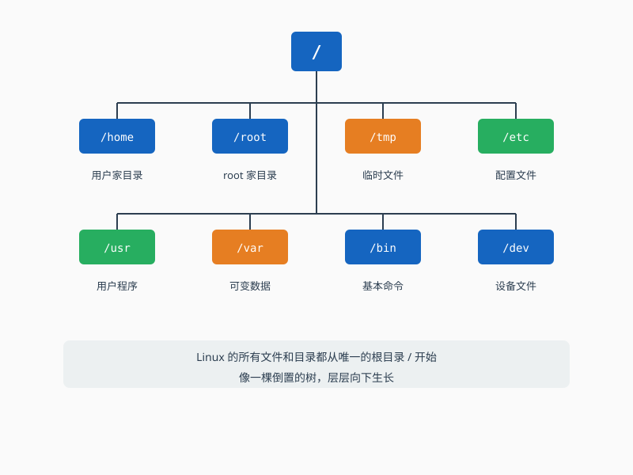
家目录与波浪号
普通用户登录后，默认会被放在自己的家目录里，位置通常是 /home/用户名。比如用户名叫 student，家目录就是 /home/student。root 用户比较特殊，他的家目录不在 /home 下，而是单独放在 /root。
每次写一长串 /home/student 会很烦，所以 Shell 给了我们一个简写：~。它是家目录的别名，也等于环境变量 $HOME 的值。无论你当前在哪里，~/Documents 总是指“我家目录下的 Documents 文件夹”。
想回家目录，有三种常见写法，效果一样：
student@debian:~/Documents$ pwd
/home/student/Documents
student@debian:~/Documents$ cd ~
student@debian:~$ pwd
/home/student
student@debian:~$ cd /tmp
student@debian:/tmp$ cd
student@debian:~$ pwd
/home/student
student@debian:~$ echo ~
/home/student其中 cd 不加参数是最懒的写法，但效果与 cd ~ 完全相同。下次你看到提示符从 ~/Documents 变回 ~，就知道自己已经回到家目录了。
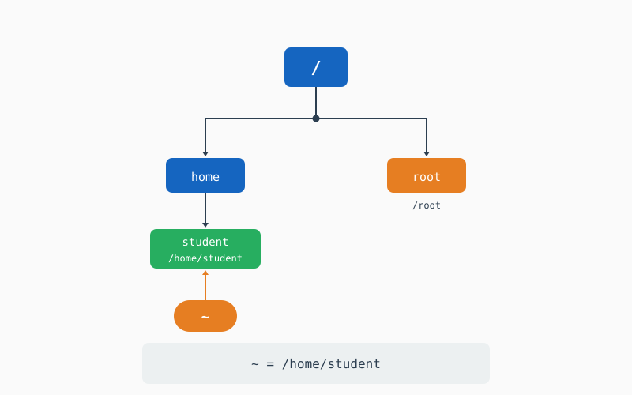
~ 简写. 和 ..：当前目录与上一级
在文件系统这棵树上移动时，你往往需要表达“我就在这里”或者“往上一层”。Linux 用两个特殊符号来做这件事：. 表示当前目录，.. 表示当前目录的父目录。它们不是命令，而是路径里的“方位词”。
最常见的用法是返回上一级：cd ..。另一个典型场景是执行当前目录下的脚本。因为当前目录通常不在 PATH 里，所以直接敲 train.py Shell 会找不到它，必须写成 ./train.py，意思是“执行当前目录下的 train.py”。复制文件到当前目录时，也可以用 . 作为目标：
student@debian:~/project/data$ pwd
/home/student/project/data
student@debian:~/project/data$ cd ..
student@debian:~/project$ pwd
/home/student/project
student@debian:~/project$ ls .
data models README.md train.py
student@debian:~/project$ cp /shared/datasets/cifs.csv .最后一条命令把服务器共享目录里的 cifs.csv 复制到了你当前所在的 ~/project 目录。注意 . 和隐藏文件没有直接关系：以 . 开头的文件名才是隐藏文件，而单独一个 . 只是目录自身的名字。
绝对路径与相对路径
同样是找一个文件，你可以从树根开始指，也可以从你现在站的位置开始指。从 / 开始的路径叫绝对路径，比如 /home/student/Documents/data.csv；从当前目录开始的路径叫相对路径，比如 Documents/data.csv 或 ../backup。
判断方法很简单：如果路径以 / 或 ~ 开头，就是绝对路径；否则就是相对路径。绝对路径的好处是“人在哪里都能准确定位”，适合写进脚本和配置文件；相对路径的好处是短，适合临时在几个相邻目录之间操作。
假设你当前正好在 /home/student 目录，下面三种写法指向同一个文件：
student@debian:~$ ls Documents/data.csv
Documents/data.csv
student@debian:~$ ls /home/student/Documents/data.csv
/home/student/Documents/data.csv
student@debian:~$ ls ~/Documents/data.csv
/home/student/Documents/data.csv在写训练脚本或材料计算工作流时，尽量用绝对路径记录数据位置，这样即使脚本被从另一个目录调用，也不会找不到文件。而日常在终端里随手翻看时，相对路径更顺手。
三板斧：pwd、ls、cd
文件系统再复杂，日常导航其实就靠三句话：pwd 回答“我在哪”，ls 回答“这里有什么”，cd 回答“我要去哪”。把这三条命令用熟，命令行里的大部分迷路情况都能解决。
ls 的常用选项有四个值得先记住：-F 会在目录名后加 /、可执行文件后加 *、符号链接后加 @，让你一眼看出类型；-a 会列出所有文件，包括以 . 开头的隐藏文件；-l 以长格式显示，输出最左边那一列是权限信息，下一章会专门讲；-h 与 -l 配合，让人类可读地显示文件大小（如 4.0K、1.2M）。
cd 除了跟目录名，还有两个小技巧：cd ~ 或 cd 回家目录，cd - 回到刚才待过的目录。后者在“下去看一眼又返回”的场景里特别省事儿。
下面是一个 AI 材料项目的目录导航示例：
student@debian:~$ cd ~/ai-materials
student@debian:~/ai-materials$ pwd
/home/student/ai-materials
student@debian:~/ai-materials$ ls -F
data/ models/ notebooks/ README.md train.py*
student@debian:~/ai-materials$ ls -a
. .. .git .gitignore data models notebooks README.md train.py
student@debian:~/ai-materials$ ls -lh
total 24K
drwxr-xr-x 2 student student 4.0K Jul 8 10:00 data
drwxr-xr-x 2 student student 4.0K Jul 8 10:00 models
drwxr-xr-x 2 student student 4.0K Jul 8 10:00 notebooks
-rw-r--r-- 1 student student 2.0K Jul 8 10:00 README.md
-rwxr-xr-x 1 student student 2.0K Jul 8 10:00 train.py
student@debian:~/ai-materials$ cd data
student@debian:~/ai-materials/data$ cd -
/home/student/ai-materials
student@debian:~/ai-materials$这三条命令不需要死记硬背。遇到新目录时，先 pwd 确认位置，再 ls 看看内容，最后用 cd 移动。反复几次之后，它们会变成你手指下的本能。
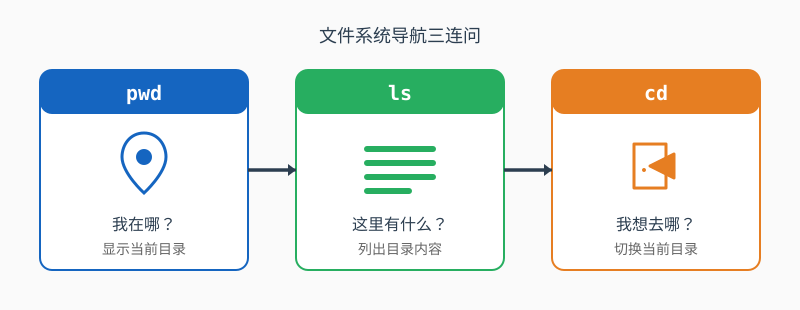
pwd、ls、cd 配合导航常用命令工具箱
上一节学会了在文件系统里定位自己：用 pwd 看位置，ls 看内容，cd 换目录。定位之后，真正的日常操作才刚刚开始——你要新建实验目录、备份模型文件、整理数据集、删除过期日志。这一节就像一个常用工具箱，把最高频的命令一次性摆出来。它们不难，但组合起来就能完成科研工作中绝大部分的文件管理任务。
创建与删除：touch、mkdir、rm、rmdir
每个项目都是从“建一个空文件夹”开始的。在命令行里，创建文件用 touch，创建目录用 mkdir。比如你想给今天的材料计算实验开个头：
student@debian:~/ai-materials$ touch README.md
student@debian:~/ai-materials$ mkdir experimentstouch README.md 会生成一个空文件。如果 README.md 已经存在，它不会报错，而是把文件的时间戳更新到现在。这个特性常被脚本用来“标记某个操作发生的时间”，但作为初学者，先掌握“创建空文件”就够了。
mkdir experiments 创建一个空目录。如果你想一次性建立多级目录——比如按年月存放实验结果——需要加上 -p 选项：
student@debian:~/ai-materials$ mkdir -p experiments/2026/07没有 -p 时，mkdir 只能创建最末一级目录；中间的 2026 不存在，命令就会失败。-p 会按需把整条路径都建好，很适合写进自动化脚本。
有创建就有删除。删除空目录用 rmdir：
student@debian:~/ai-materials$ rmdir experiments/2026/07rmdir 有个限制：只能删空目录。如果目录里还有文件，它会拒绝执行。这个限制其实是安全网，防止你顺手删掉一整个装满数据的文件夹。
删除文件用 rm。删除目录及其内容要用 rm -r，其中 -r 表示递归：
student@debian:~/ai-materials$ rm README.md
student@debian:~/ai-materials$ rm -r experiments/2026/07这里必须停下来强调一件严肃的事：rm 删除的文件不会进回收站，也没有“撤销”按钮。 在 Linux 上，一旦 rm 执行成功，文件系统只是把这些数据标记为“可覆盖”，普通用户几乎不可能原样恢复。训练了一个星期的模型权重、跑了一个月的模拟结果，可能因为一条手滑的命令就永远消失。
所以，删除前先 ls 确认目标，是命令行里最重要的肌肉记忆之一：
student@debian:~/ai-materials$ ls experiments/2026/07
test_run.log
student@debian:~/ai-materials$ rm experiments/2026/07/test_run.log
student@debian:~/ai-materials$ rmdir experiments/2026/07如果还不放心，可以给 rm 加上 -i 选项，让它每次删除前都询问确认。有些系统管理员会给普通用户默认设置 alias rm='rm -i'，但你不要依赖这个别名——养成自己先确认的习惯更可靠。
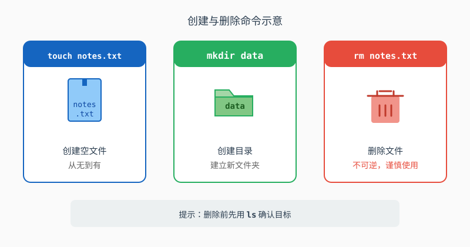
复制与移动：cp 与 mv
实验做了很多次，你通常不会只保留一份结果。重要的模型权重、关键的中间数据，最好复制一份备份，再去做下一步分析。复制用 cp：
student@debian:~/ai-materials$ cp model_best.pth model_best.pth.bak现在 model_best.pth.bak 就是原文件的一份独立副本。即使后续训练把 model_best.pth 覆盖或损坏了，备份还在。
如果想复制整个目录，必须加 -r：
student@debian:~/ai-materials$ cp -r experiments experiments_backupmv 则负责移动和重命名。它在同一个目录下改名，在不同目录之间搬运：
student@debian:~/ai-materials$ mv train_2026_07_08.log train_old.log
student@debian:~/ai-materials$ mv train_old.log archive/第一条命令把日志文件重命名，第二条把它移进 archive/ 目录。如果 archive/ 里已经有一个 train_old.log，mv 会默认覆盖它，不会提前打招呼。
覆盖是命令行里最容易发生的“静默事故”。 因为 cp 和 mv 都不会像图形界面那样弹窗问你“是否替换”。执行前，先用 ls 看看目标目录里有没有同名文件：
student@debian:~/ai-materials$ ls archive/
student@debian:~/ai-materials$ mv train_old.log archive/假设当前目录下还有一个 report.txt 文件。或者加上 -i 开启交互确认：
student@debian:~/ai-materials$ mv -i report.txt archive/
mv: overwrite 'archive/report.txt'?科研场景里，复制常用于备份模型检查点，移动常用于按日期整理日志。一个顺手的小习惯是：复制前先 ls 源文件，移动前先 ls 目标目录。两个动作各看一眼，能避开大部分覆盖事故。
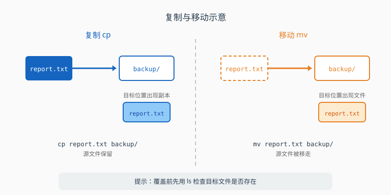
隐藏文件与文件名规则
在文件系统里，有些文件故意不显示在普通列表里。它们的名字以 . 开头，比如 .bashrc、.gitignore、.ssh。这些就是隐藏文件。它们的用途通常是存放配置或环境信息，日常不需要频繁查看，所以默认被 ls 藏起来。
想看全它们，需要加 -a：
student@debian:~$ ls
Documents Downloads ai-materials
student@debian:~$ ls -a
. .. .bashrc .profile .ssh Documents Downloads ai-materials输出里最前面的 . 和 .. 是目录自身的引用，不是文件；后面以点开头的才是真正的隐藏文件。
Linux 对文件名没有太多的格式限制，但有几条约定俗成的规则值得遵守。第一，Linux 不靠扩展名判断文件类型。train.py 和 train 对系统来说没有本质区别，文件类型由内容决定，扩展名只是给人看的提示。第二，文件名区分大小写：Report.txt 和 report.txt 是两个不同文件。第三，尽量避免在文件名里用空格、星号、问号、美元符号等特殊字符；它们会让命令行解析变得复杂，也容易写出错误的通配符。
推荐的习惯是用小写字母、数字、下划线和连字符，例如：
student@debian:~/ai-materials$ touch data_2026_07_08.csv
student@debian:~/ai-materials$ touch "my data.csv"
# 不推荐：空格需要加引号或转义，徒增麻烦科研项目里常见的隐藏文件包括 .gitignore（告诉 Git 哪些文件不要追踪）和 .bashrc（个人 Shell 配置）。它们不会出现在普通文件列表里，却一直默默影响你的工作流程。
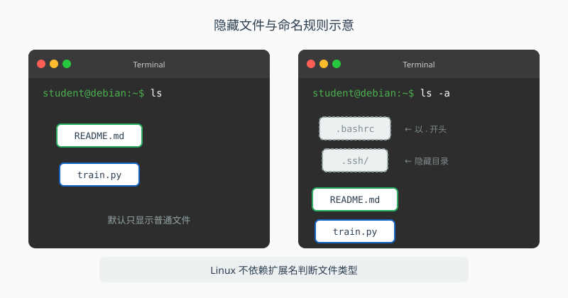
通配符：批量操作的秘密武器
科研数据很少只有一份。训练完模型，目录里可能躺着 result_001.log 到 result_100.log；材料计算导出的结构文件可能是 cif_001 到 cif_500。一个个复制、移动或删除显然太慢，通配符就是为此而生的。
最常用的是 *，它匹配任意数量的任意字符：
student@debian:~/ai-materials$ ls *.log
result_001.log result_002.log result_003.log
student@debian:~/ai-materials$ mv *.log logs/*.log 会被 Shell 展开成当前目录下所有以 .log 结尾的文件名，然后才交给 mv 执行。真正运行的是 mv result_001.log result_002.log result_003.log logs/，只是你不需要一一敲出来。
? 匹配单个字符。比如 result_0?.log 会匹配 result_01.log 到 result_09.log，但不会匹配 result_10.log：
student@debian:~/ai-materials$ ls result_0?.log
result_01.log result_02.log ... result_09.log[...] 匹配方括号中的任意一个字符。比如 [abc] 匹配 a、b 或 c。想删除 temp1.log 到 temp5.log，可以这样写：
student@debian:~/ai-materials$ rm temp[1-5].log花括号 {...} 不是通配符，而是“ brace expansion ”。它由 Shell 直接展开成多个字符串，常用于批量创建结构相似的文件：
student@debian:~/ai-materials$ touch result_{A,B,C}.txt
student@debian:~/ai-materials$ ls
result_A.txt result_B.txt result_C.txt通配符威力很大，误用也很危险。 一条 rm *.log 可能删掉你本来想保留的日志。使用前先 ls 预览匹配结果，是避免批量事故的最佳办法：
student@debian:~/ai-materials$ ls *.log
student@debian:~/ai-materials$ rm *.log如果匹配范围比你想象的大，ls 会提前暴露问题；确认无误后再换成真正的修改命令。
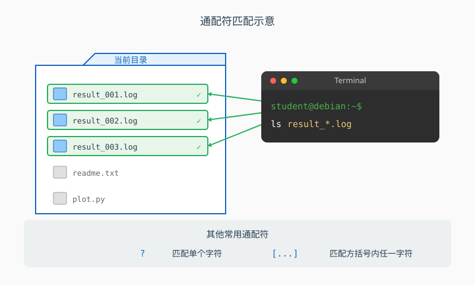
find：在文件系统里找人
通配符只能在当前目录批量匹配。如果你的文件散落在多层子目录里，或者你根本不记得它放在哪，就需要 find。find 会递归地走进目录树，按你指定的条件筛选文件。
最基本的用法是“从某个目录开始，按名字找”：
student@debian:~$ find . -name "*.log"
./ai-materials/logs/result_001.log
./ai-materials/logs/result_002.log
./experiments/old/train.log这里 . 表示“从当前目录开始”，-name "*.log" 表示“名字以 .log 结尾”。find 会一层一层地钻进子目录，把所有匹配结果列出来。
你也可以按类型查找。比如只想找目录：
student@debian:~$ find . -type d -name "data"
./project1/data
./project2/data-type f 表示普通文件，-type d 表示目录。组合起来可以精准定位。
与通配符不同，find 的 -name 参数本身由 find 程序解释，而不是由 Shell 展开。这一点在包含空格或特殊字符的路径上尤其重要：Shell 通配符可能会先展开成一串文件名，而 find 是在遍历目录树的过程中自己去做匹配。
find 还能按文件大小、修改时间等条件筛选。一个常见的科研场景是清理过期日志：先把 7 天前的日志找出来确认，再决定是否删除：
student@debian:~/ai-materials$ find logs/ -name "*.log" -mtime +7
logs/result_2026_06_25.log
logs/result_2026_06_26.log-mtime +7 表示“修改时间在 7 天之前”。先只运行 find 不加删除动作，确认列表无误后，再考虑后续处理。很多初学者会直接搜“如何用 find 删除文件”然后复制一条带 -delete 或 -exec rm 的命令，这正是事故高发区。先定位、再确认、最后动手，永远是更稳妥的节奏。
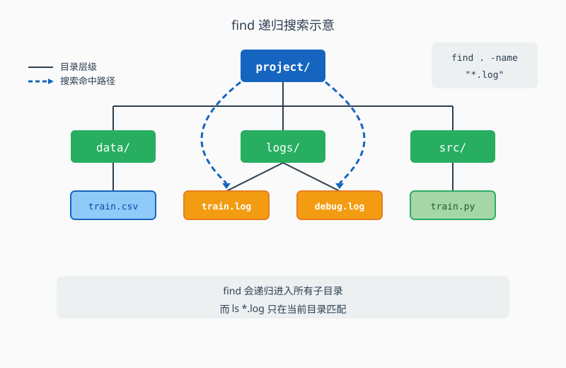
find 递归搜索示意wget：下载文件
科研工作中经常需要从网络获取数据：公开数据集、预训练模型权重、论文附录、软件安装包。在图形界面里，你会打开浏览器，点下载按钮，等待文件落到“下载”文件夹。在服务器上，没有浏览器，或者浏览器下载很不方便，这时 wget 就派上用场了。
wget 最基本的用法就是给出一个 URL：
student@debian:~/ai-materials$ wget https://example.com/dataset.zip文件会下载到当前目录，名字通常和 URL 末尾一致。如果你想指定保存名，用 -O：
student@debian:~/ai-materials$ wget -O sample_data.zip https://example.com/data/sample.zip下载大文件时，网络中断是常事。wget 支持断点续传，用 -c 选项可以从上次断开的位置继续下载，而不是从头再来：
student@debian:~/ai-materials$ wget -c https://example.com/large-model.pth对于动辄上 GB 的模型权重或材料数据库，断点续传能省下大量时间和带宽。如果服务器需要半夜挂机下载，还可以把 wget 放进后台，或者配合 nohup 使用。
需要提醒的是，只从可信来源下载文件。 从陌生网站下载的二进制文件、脚本或数据集可能包含恶意代码。公开数据集尽量使用官网或论文提供的链接；不要下载来历不明的脚本。如果下载的是可执行文件或脚本，最好先用 md5sum/sha256sum 校验官方公布的哈希值，或先在一个临时目录/虚拟机中检查内容，不要直接运行。
历史与补全：让终端替你记
命令行不是打字比赛。很多长命令你其实只需要敲前几下，剩下的可以交给终端。
按上箭头，终端会调出你刚才执行过的命令；继续按上箭头，可以往前翻阅更早的历史。如果按过了头，按下箭头又能退回来。训练模型时那条长长的命令，比如 python train.py --config configs/resnet50.yaml --epochs 200 --batch-size 32，不必每次重新敲，按几下上箭头就能召回。
想看完整的历史列表，用 history 查看命令历史：
student@debian:~$ history
1 ls
2 cd ai-materials
3 python train.py --config configs/resnet50.yaml
4 ls logs/每条命令前面有一个编号。输入 !3 就可以重新执行编号为 3 的命令。不过初学者不需要刻意记这个语法，上下箭头更直观。
更高效的技巧是 Ctrl+R 反向搜索。按住 Ctrl 再按 R，会出现一个搜索提示符，输入关键词就能在历史里找匹配的命令：
(reverse-i-search)`train': python train.py --config configs/resnet50.yaml再按一次 Ctrl+R 可以找上一条匹配，按回车就能直接执行。
另一个每天都要用的是 Tab 自动补全。输入命令名或路径的前几个字符，按一下 Tab，终端会自动补全；如果有多个候选，按两下 Tab 会列出所有可能：
student@debian:~/ai-materials$ cd conf
student@debian:~/ai-materials$ cd configs/输入 cd conf 后按 Tab，终端自动补成 configs/。补全不仅能减少输入量，更重要的是避免拼写错误。路径里一个字母写错，训练脚本可能就找不到配置文件；用 Tab 补全，基本不会出现这种问题。
养成“少敲、多补、善用历史”的习惯，命令行会从一个需要死记硬背的界面，变成一个你越用越顺手的工具。
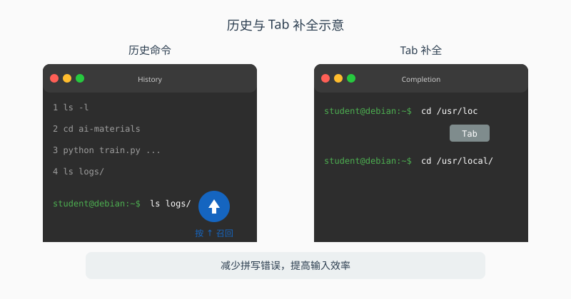
管道与重定向：命令行的“乐高”
到了这一节，你已经能创建、复制、移动文件，也能在目录树里自由穿行。但命令行真正的威力不只是“一个命令干一件事”，而是把很多简单命令像乐高积木一样拼起来，让数据在它们之间流动，最后把结果送进文件。这一节要讲的管道和重定向，就是搭建这条流水线的两块核心积木。
管道：把命令串起来
每个命令只做一件事，但真实任务往往更复杂。比如你想看当前目录下所有文件的详细信息，并且能上下滚动翻看，而不是一屏接一屏地刷过去。单独用 ls -l 会一次性把内容全倒出来；单独用 less 可以分页，但它自己不会生成文件列表。把两者用一根“管子”连起来，问题就解决了：
student@debian:~/ai-materials$ ls -l | less竖线 | 就是管道符。它的作用很直接：把左边命令的输出，原封不动地交给右边命令作为输入。在上面的例子里，ls -l 本来要把结果打印到终端，现在它把结果塞进了 less 的嘴里，less 再负责分页显示。
这种思想叫做“流水线”：每个环节只处理自己擅长的一步，通过管道传递半成品。在 AI 训练日志分析里，这种模式天天都在用。比如你想从训练日志里找出所有包含 Loss 的行：
student@debian:~/ai-materials$ cat train.log | grep "Loss"cat 负责把文件内容原样输出，grep 负责按关键词过滤。两者通过管道连接，前者读文件，后者读前者。等效地，你也可以直接写 grep "Loss" train.log，因为 grep 本身就能读文件；但管道思想的价值在于，当任务变复杂时，你可以继续往右边加环节，而不需要把中间结果存成临时文件。
再看一个材料模拟场景：你有一百个 *.log 文件，想知道其中有多少个报告了收敛：
student@debian:~/ai-materials$ grep "Convergence reached" *.log | wc -l这里 grep 先把含有关键字的行挑出来，wc -l 再数一数有多少行。没有管道，你得先把 grep 的结果写进临时文件，再用 wc 去读那个文件。管道让数据直接在命令之间流动，省掉了中间文件，也减少了出错机会。
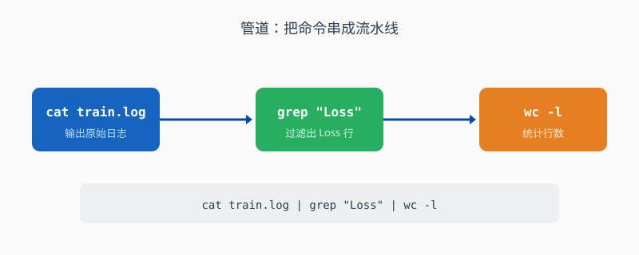
重定向：输出到文件
管道把命令和命令连起来，重定向则把命令和文件连起来。命令的输出默认都流向终端屏幕，但你可以用手里的“阀门”把它引向别处。
最常见的阀门有两个：> 和 >>。> 表示“覆盖写入”：如果目标文件不存在，就新建一个；如果已经存在，先把旧内容清空，再把新内容写进去。>> 表示“追加写入”：新内容接在文件末尾，原来的东西还在。
比如你做实验时想记录一个备忘：
student@debian:~/ai-materials$ echo "finished" >> notes.txt用 >> 很安全，因为它不会擦掉 notes.txt 里已有的记录。但如果你写成 echo "finished" > notes.txt，而 notes.txt 里本来写着昨天的重要参数，那昨天那条记录就会被一声不响地覆盖掉。> 覆盖后几乎无法恢复，使用前要确认你真的不需要旧内容。
重定向也常用于把搜索结果保存成报告：
student@debian:~/ai-materials$ grep "accuracy" *.log > summary.txt这条命令把所有 *.log 里包含 accuracy 的行都写进 summary.txt。之后你可以用 cat summary.txt 或 less summary.txt 慢慢看，也可以把它下载到本地做进一步分析。
除了把输出“写出去”，还可以把输入“引进来”。小于号 < 让命令从文件读取输入，而不是从键盘读取。这种方向叫输入重定向。例如：
student@debian:~/ai-materials$ sort < unsorted.txt > sorted.txt这行命令同时用了输入重定向和输出重定向：sort 从 unsorted.txt 读数据，排好序后写进 sorted.txt。很多命令其实可以直接跟文件名，所以 < 在日常使用中不如 > 和 >> 常见；但遇到只从标准输入读取数据的程序时，它就能派上用场。
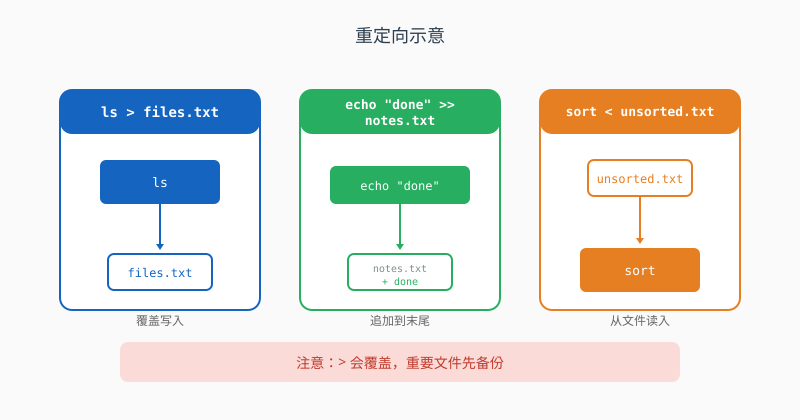
stdin、stdout、stderr：三种水流
要真正理解管道和重定向，需要知道命令并不是只有“一股输出”。我们可以把命令看作一台小水泵，它旁边连着三根水管：
stdin（标准输入，编号 0）：默认接到键盘，命令从这里读数据。stdout（标准输出，编号 1）：默认接到终端屏幕，命令的正常结果从这里流出。stderr（标准错误，编号 2）：默认也接到终端屏幕，但专门流错误信息。
默认情况下，三根水管都连到终端：你敲键盘给命令喂输入，命令把正常输出和报错都喷到屏幕上。管道和重定向的作用，就是帮你把这根水管改接到别的地方。
> 和 >> 默认改的是 stdout。如果你想单独把错误信息引走，就要用到 2>：
student@debian:~/ai-materials$ python train.py > out.log 2> err.log这行命令做了三件事：运行 python train.py；把正常训练日志写进 out.log；把报错和警告写进 err.log。训练跑完后，你可以先看 out.log 里的 loss 曲线，再看 err.log 里有没有异常。两者分开，排查问题会清晰很多。
如果你只写 python train.py > out.log，那么 stderr 仍然会喷到终端屏幕上。于是你会看到一种常见现象：终端上明明有红字报错，但 out.log 里却找不到它们——因为那些红字走的是 stderr，没被重定向。
三个水管的编号 0、1、2 在写复杂命令时会用到，初学者先记住对应关系即可：0< 或 < 改输入，1> 或 > 改正常输出，2> 改错误输出。等你需要把错误也合并进正常日志时，自然会用到 2>&1 这样的写法，但那是进阶话题，本节点到为止。
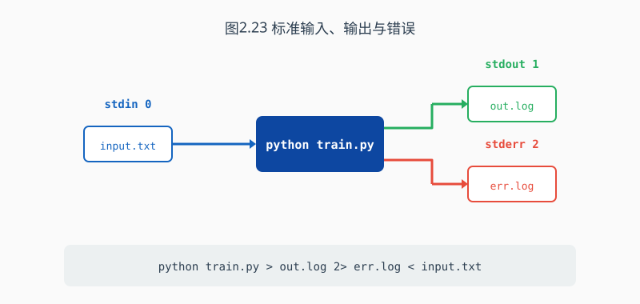
组合实战：从日志里提取并统计
现在把管道和重定向放在一起，做一个真正有用的任务：从一堆训练日志里提取信息、分类、统计，并把结果保存下来。
假设你跑了十次材料结构优化，每次产生一个 *.log 文件。你想知道有多少次成功收敛：
student@debian:~/ai-materials$ grep "Convergence reached" *.log | wc -l
8grep 挑出所有含“Convergence reached”的行，wc -l 统计行数。输出是 8，说明十次实验里有八次收敛。
再复杂一点：你想看看这些日志里出现了哪些种类的错误，每种出现多少次，并按出现次数排序：
student@debian:~/ai-materials$ grep "error" *.log | sort | uniq -c | sort -nr > error_summary.txt这条流水线可以拆开来看：
grep "error" *.log：从所有日志中挑出包含error的行。sort：把这些行排序，让相同的错误挨在一起。uniq -c：合并相邻的重复行，并在前面加上出现次数。sort -nr：按次数从多到少排序（-n按数字排，-r倒序）。> error_summary.txt：把最终结果写进文件。
拆开之后，每一小段都不难。建议你在自己操作时，先让每一小段单独跑通，看到中间结果，再一根一根地接上管道。比如先运行 grep "error" *.log，确认筛选范围正确；再加 | sort | uniq -c 看统计；最后才接上重定向。这种“增量构建”的方式，比一次性写一条长命令再排查错误要轻松得多。
管道和重定向让命令行从一个“一个命令一个动作”的工具，变成了一条可以自由拼装的生产线。下一节，我们会回到更基础的问题：当你忘了命令、遇到报错、不敢下手时，该怎么办？
迷路了怎么办？求助与好习惯
学到这里，你已经能创建、复制、删除文件，能在目录树里导航，也能用管道和重定向把命令串成流水线。但命令行真正难住的初学者，往往不是某个具体命令，而是一种感觉：面对黑底白字的窗口，不知道命令怎么写、出了问题向谁问、手悬在回车键上不敢按。
这一节不讲新命令，只讲几件事：回车前的停顿、遇到不会的命令怎么查、怎么养成先确认再操作的习惯，以及两个能在关键时刻救场的快捷键。这些东西不会出现在任何考试题里，却决定你能在命令行里走多远。
先别急着敲回车
命令行没有“撤销”菜单，很多操作按了回车就立刻生效。所以最重要的习惯不是背多少命令，而是回车前停一秒。
这一秒不是用来发呆的，用来回答三个问题：
- 这条命令要改什么？
- 在哪里改？
- 有没有可能误伤其他文件？
比如你想清理当前目录下所有 .txt 文件，脑子里先确认：我现在在哪个目录？这些 .txt 文件是不是都在这个目录里？有没有重要的笔记也在里面？然后再敲命令。
如果你不确定命令的实际效果，可以用 echo 做预览。echo 只是把后面的内容原样打印出来，不会真的执行：
student@debian:~/ai-materials$ echo rm *.txt
rm notes.txt result_001.txt temp.txt这行命令不会删除任何文件，它只是让你看到 rm *.txt 展开后会作用在哪些文件上。如果列表里有你不想删的文件，就停下来改模式；如果确认无误，再把 echo 去掉，执行真正的 rm。
同样，移动或复制前也可以用 ls 先看目标：
student@debian:~/ai-materials$ ls *.txt
notes.txt result_001.txt temp.txt
student@debian:~/ai-materials$ rm *.txt停顿不是胆小，而是给眼睛一个检查的机会。刚开始会觉得慢，熟悉之后，这“一秒三问”会变成本能。
三条求助渠道：man、--help、tldr
没有人能记住所有命令的所有选项。遇到不会的命令，第一件事应该是查帮助，而不是去搜索引擎里复制第一段答案。Linux 上至少有三种常用帮助渠道，它们各有分工。
第一条是 man（manual 的缩写），它提供最完整的手册页。想看 ls 的所有选项，就敲：
student@debian:~$ man ls打开后，你会进入一个只读浏览界面。按空格向下翻页，按 q 退出，按 / 后输入关键词可以搜索。比如想找与“时间”相关的选项，按 /time 再回车，按 n 跳到下一个匹配。手册页通常很长，适合当你需要了解某个选项的精确含义时使用。
第二条是 --help，几乎每个命令都支持。它给出的信息比 man 短，主要是命令用法和常用选项列表：
student@debian:~$ grep --help
Usage: grep [OPTION]... PATTERNS [FILE]...
Search for PATTERNS in each FILE.
Example: grep -i 'hello world' menu.h main.c
...如果你只是想快速确认某个选项的写法，--help 通常比 man 更快。
第三条是 tldr，它不是系统自带，需要额外安装。在 Debian/Ubuntu 上可以用 apt install tldr 安装（这通常需要管理员权限，第三章会详细讲 sudo）。安装完成后，你就可以用 tldr 命令名 查看常用示例了。tldr 的理念是“给新手的实用示例”，不讲全部参数，只列出最常见的几种用法：
student@debian:~$ tldr tar
# tar
Archiving utility.
...
- Create an archive from files:
tar -czf target.tar.gz file1 file2
- Extract an archive:
tar -xzf source.tar.gz对于初学者，推荐的顺序是：先 --help 或 tldr 快速上手，遇到细节问题再去 man 里查。三者组合起来，大部分“这个命令该怎么用”的问题都能自己解决。
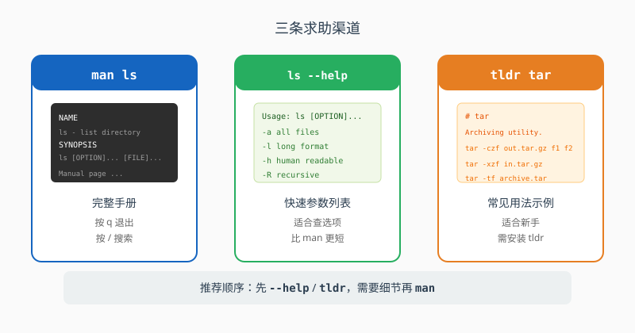
先 ls 再操作：肌肉记忆
本章多次提到 ls，因为它是最便宜的保险。执行任何会修改文件系统的命令之前，先用 ls 看一眼目标，是命令行里最值得养成的肌肉记忆。
这条规则对通配符尤其重要。通配符展开后的结果可能比你想象的大。比如你以为 rm *.log 只会删掉实验日志，但当前目录里可能还有一个 important.log：
student@debian:~/ai-materials$ ls *.log
important.log result_001.log result_002.log temp.log
student@debian:~/ai-materials$ rm result_*.log temp.log看到 ls 的结果后，你改变了计划，只删除 result_*.log 和 temp.log，留下 important.log。这就是预览的价值。
把它固化成一个四步流程，以后每次操作都按这个顺序来：
- 定位：用
pwd确认自己在哪。 - 预览：用
ls或echo看命令会作用到哪些文件。 - 执行：确认无误后再敲真正的命令。
- 验证：执行完再用
ls看一眼结果是否符合预期。
比如整理训练日志：
student@debian:~/ai-materials$ pwd
/home/student/ai-materials
student@debian:~/ai-materials$ ls *.log
result_001.log result_002.log result_003.log
student@debian:~/ai-materials$ mv *.log logs/
student@debian:~/ai-materials$ ls logs/
result_001.log result_002.log result_003.log四步走完，不仅操作正确，你心里也有底。这个流程刚开始会觉得冗余，但它是避免“手滑”最有效的办法。
Ctrl+C 与 Tab：两个救场键
命令行里有两个键，平时不起眼，关键时刻能救场。
第一个是 Ctrl+C。它的作用是中断当前正在运行的命令。注意：在终端里它不是“复制”，而是“停止”。如果你误启动了一个会跑很久的程序，或者发现命令输出疯狂刷屏，立刻按 Ctrl+C：
student@debian:~/ai-materials$ python train.py --epochs 1000
Epoch 1/1000: loss 0.42
Epoch 2/1000: loss 0.38
Epoch 3/1000: loss 0.35
^C
Traceback (most recent call last):
...
student@debian:~/ai-materials$按 Ctrl+C 后，程序会停止，终端重新回到提示符。如果你只是在训练模型时想提前结束，这通常不会损坏已经保存的检查点；但如果是正在写入文件的操作，强行中断可能会留下不完整的数据。所以 Ctrl+C 是“暂停键”，不是“万能撤销键”。
第二个是 Tab。输入命令或路径时按 Tab，终端会自动补全。如果有多个候选，按两下 Tab 会列出所有可能：
student@debian:~/ai-materials$ cd /usr/loc
student@debian:~/ai-materials$ cd /usr/local/输入 /usr/loc 后按 Tab，终端补全为 /usr/local/。对于长路径，比如 /home/student/ai-materials/experiments/2026-07/configs，你只需敲前几个字母，剩下的交给 Tab。这不仅省时间，更能避免拼写错误：路径里少写一个字母，脚本可能就找不到数据。
另外，如果屏幕上的输出太多、太乱，可以按 Ctrl+L 清屏。它不会删除任何内容，只是把当前显示推到上方，给你一个干净的窗口。
初学者的安全清单
前面四节零散地提到了很多习惯，最后一节把它们汇总成一张清单。你可以把它抄在便签上，贴在显示器旁边；也可以存进手机，遇到不确定的操作时对照一遍。
- 回车前停一秒，回答“改什么、在哪改、有没有危险”。
- 修改文件前，先用
ls或echo预览。 - 对重要文件先备份，再执行可能覆盖或删除它的命令。
- 不复制、不执行来历不明的命令和脚本。
- 永远不要尝试
rm -rf /或类似命令。 - 善用
--help、tldr、man，自己先查再问。 - 出错提示不是惩罚，认真读它，通常能找到线索。
这些习惯不会让你变成命令行高手，但会保护你不变成“凭一条命令删掉整月数据”的反面教材。命令行是一个需要慢慢建立信心的环境：每一次先确认再执行，每一次认真阅读报错，每一次自己查帮助解决问题，都会让你更熟悉它。
到这里，第二章就结束了。你已经学会了命令行的基本操作、远程登录、文件系统导航、常用命令、管道与重定向，也建立了一些基本的安全习惯。下一章，我们会进入 Linux 的用户、权限与软件安装——也就是“谁能在系统里做什么”以及“怎么装自己需要的软件”。